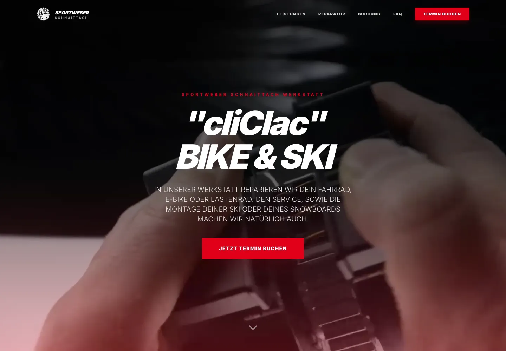

Sport-Weber Schnaittach
Sport-Weber Schnaittach
Bikeservice mit Online-Buchung.
Eine Service-Plattform für die Meisterwerkstatt: Leistungen, Service-Pakete und Online-Terminbuchung – rund um die Uhr erreichbar unter eigener Adresse.

- Branche
- Sportfachhandel (Bike & Ski)
- Leistung
- Webentwicklung
- Besonderheit
- Zweites gemeinsames Projekt
Werkstatttermine online
Werkstatttermine lassen sich jederzeit online buchen.
-
Die Ausgangslage
Nach dem gemeinsamen Verleihsystem stand bei Sport-Weber der nächste Ablauf an: die Fahrradwerkstatt. Termine für Service und Reparaturen liefen bislang über Telefon und Ladentheke – Zeit, die im Tagesgeschäft fehlt, und für Kunden nur zu Öffnungszeiten möglich.
-
Unsere Lösung
Eine eigene Service-Plattform unter service.sportweber-schnaittach.de: Kunden sehen die Leistungen und Service-Pakete der Meisterwerkstatt auf einen Blick – vom Fahrrad über E-Bike bis zum Lastenrad, inklusive Ski- und Snowboard-Montage – und buchen ihren Termin direkt online. Ein FAQ beantwortet die häufigsten Fragen vorab.
-
Das Ergebnis
Die Werkstatt ist rund um die Uhr buchbar: Kunden wählen ihren Termin, wann es ihnen passt – und das Team plant mit strukturierten Online-Buchungen statt Telefonnotizen.
Die schönste Referenz ist ein Kunde, der wiederkommt.
Nach der Verleihsoftware mit automatischer Rechnungserstellung folgte die Werkstatt-Plattform – aus einem Projekt wurde eine Zusammenarbeit.
Das steckt drin
-
Online-Terminbuchung rund um die Uhr
-
Service-Pakete übersichtlich dargestellt
-
Fahrrad, E-Bike, Lastenrad – plus Ski & Snowboard
-
FAQ für die häufigsten Fragen
-
Eigene Service-Adresse, angebunden an den Auftritt
-
Mobiloptimiert – buchen direkt vom Smartphone
Dein Projekt könnte das nächste sein.
Erzähl uns von deiner Idee. Im kostenlosen Erstgespräch klären wir, was sich für dein Team verbessern lässt.